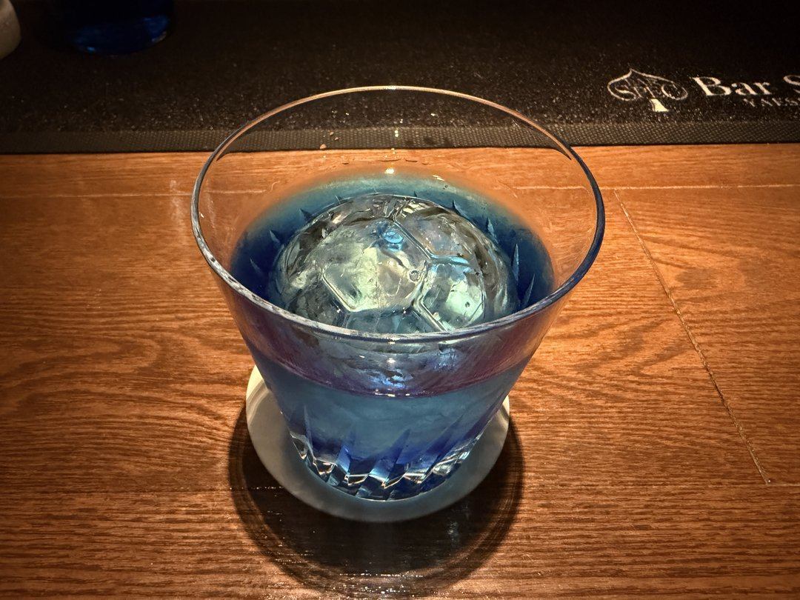

Samurai Blue
侍ブルー（SPEC Original）
ロック提供
オリジナル
ステア
判断不要
レシピ（1杯）
| ブルーキュラソー | 20ml |
|---|---|
| パッソア | 20ml |
| ウォッカ | 20ml |
| 柚子 | 2 dash |
作り方（ステア）
- ミキシンググラスに氷を入れて冷やす。
- ブルーキュラソー・パッソア・ウォッカ・柚子を注ぐ。
- 15回ほどステアして、冷やしながら適度に加水する。
- ロックグラスにサッカーボール型の丸氷をセットする。
- ストレーナーで注ぎ、提供する。
運用ルール
・分量・配合・手順は固定
・自己判断での変更は禁止
・分量・配合・手順は固定
・自己判断での変更は禁止
参考写真

チェックポイント
| 色 | 鮮やかなブルーが出ているか |
|---|---|
| 香り | 柚子の和柑橘が香るか |
| 甘み | パッソアが強すぎず、程よいか |
| 温度 | しっかり冷えているか |
| 見た目 | サッカーボール氷がきれいに見えるか |